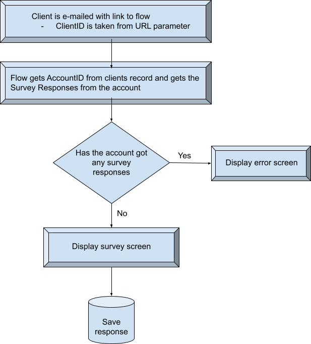

Design Brief
OVERVIEW & PURPOSE
The client is measuring human rights abuses internationally. They do this by sending a unique and secure email to a pre-selected group of experts in various countries. This email contains a link to a survey which they can complete.
Diagram

AUTOMATION
- Email Lightning Template Builder was used for creating the email template. Email template included link to flow. Clicking link in email creates a text variable storing the Client ID.
- Account ID is compared against the Client ID.
- If account has a survey result then an error screen is displayed. If not client is able to complete survey.
- Questions are created from the custom object Survey Results and stored in three variables.
- Screen displays questions from the variables.
- Picklist fields on the Flow screen are automatically generated from three picklist sets.
- Once the finish button is clicked (on the flow screen) the Client ID is extracted from the text variable, the survey result answers for the three questions are extracted, and the Account ID is extracted, and saved in the Survey Result custom object.
USER INTERFACE
Once a user clicks a unique link in email they will be taken to the Flow Screen. The Flow screen consists of:
- Three questions, with 4 multi choice answers each.
- At the bottom of the screen will be a button to continue.
- Once a button is clicked they will be taken to the success screen.
- There will be tabs on Sales app for:
- Accounts
- Contacts
- Survey Questions - Allows changing questions in future
- Email template - For changing text in the email
- Survey Result Count - Counts number of records in Survey Result custom app. This is a flow.
- Reports - A report has been created for Survey Results with Account ID. Seems to be more accurate than the Survey Result Count flow.
If a user has already done a survey they will be taken to a different Flow Screen with an error message.
TOOLS
- Email Template Builder
- Flow Wizard
OBJECTS AND FIELDS
- Custom object called Survey Result (used for storing client survey results)
- AccountID
- Contact -> Master-Detail (Contact)
- Question 1 -> Picklist with 4 values
- Question 2 -> Picklist with 4 values
- Question 3 -> Picklist with 4 values
- Custom object called Survey Question (used for storing the survey questions)
- Survey Question Name -> Text (80)
- Question 1 -> Text (255)
- Question 2 -> Text (255)
- Question 3 -> Text (255)
- Question 1 Answer -> Picklist Choice Sets
- Question 2 Answer -> Picklist Choice Sets
- Question 3 Answer -> Picklist Choice Sets
- varEditorQuestion1 -> Variable for storing Question 1 field text
- varEditorQuestion2 -> Variable for storing Question 2 field text
- varEditorQuestion3 -> Variable for storing Question 3 field text
BENEFITS
- Flow is scalable as it allows the dynamic updating of questions. Questions can be changed in future to what the survey requires.
- Contacts are sent an easy email (using template) with a link to flow. Very easy process.
LIMITATIONS
- Security & user access permissions haven’t been created. If I had more time I would
- Create a permission set for access to the survey questions for public users
- Create a permission set for the ability to update survey questions
- Surveys are limited to 3 questions. In future more fields and edits to flow would need to be edited to allow more questions.
- Picklist values are fixed. So if different values are needed, they would need to be changed on the custom object.
ENHANCEMENTS
- Rather than have the Survey Question object store questions in the fields a more scalable design would be:
- Have a single question field on the Survey Question object
- Allow users to create multiple question records in the object (right now the query is only taking a single record)
- Then in the flow query those questions
- Build the fields in flow dynamically from results of the query
- API call to website to display survey count
- Looked into this and two options could be: external service or APEX but need a bit of coding. Due to requirements of low or no code this could be a bit tricky.